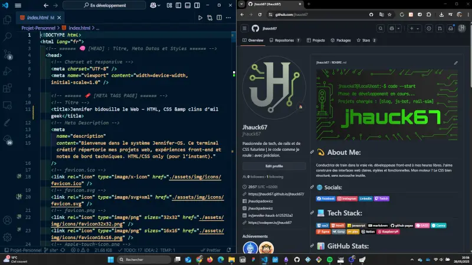
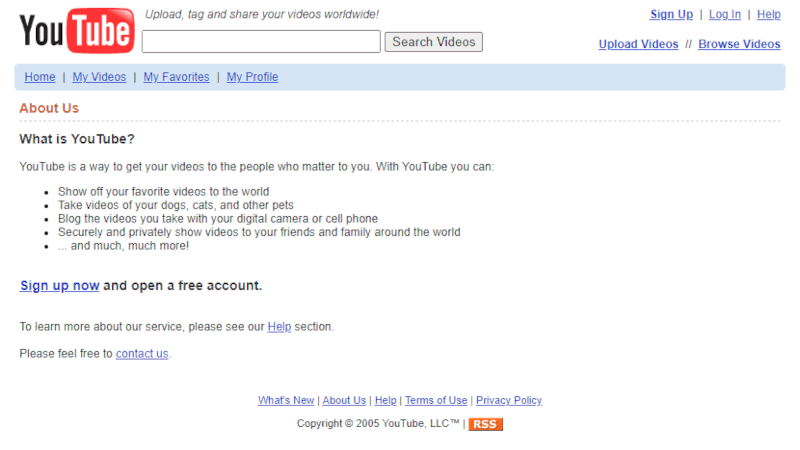

De la bidouille à l'apprentissage du code
Depuis toujours, j’ai un attrait pour les systèmes techniques, les trucs qu’on démonte pour comprendre comment ça marche. Je me suis souvent amusée à bidouiller, sans forcément me dire que je “faisais du code”. Au collège et au lycée, c’était la calculatrice graphique qui faisait office de terrain de jeu : je tapais du BASIC pour créer des petits jeux ou automatiser des calculs — pas très lisible, pas très structuré, mais ça marchait. Et surtout, c’était grisant de faire obéir une machine à quelques lignes de texte.
Plus tard, j’ai découvert le Raspberry Pi. Ce mini-ordinateur, aussi compact que puissant, m’a permis de tester plein de choses : media center, console de rétrogaming, environnement Linux minimaliste… J’aimais configurer, ajuster, tester, sans vraiment écrire du code au sens strict. J’étais dans une posture de “bricoleuse numérique” : je suivais des tutos, je montais des systèmes fonctionnels, mais je voulais plus.
À un moment, j’ai eu envie de franchir un cap : comprendre ce que je faisais, pas juste reproduire. Apprendre à coder “pour de vrai”, pas juste assembler des blocs ou suivre des recettes. Reste une question : par où commencer ?
Après quelques recherches, une réponse simple revenait en boucle : le HTML. Langage de base, facile à apprendre, utile tout de suite. Ce serait ma première étape vers un apprentissage plus structuré.
Pourquoi le HTML ?
Quand on commence à s’intéresser sérieusement au code, on se retrouve vite face à une jungle de langages, de frameworks, de technologies. JavaScript, Python, React, SQL, PHP… On peut facilement se perdre, ou vouloir tout apprendre en même temps. Mais moi, je voulais commencer simplement, par quelque chose de visible, logique, accessible. Et c’est exactement ce que propose le HTML.
Le HTML (HyperText Markup Language), ce n’est pas un langage de programmation à proprement parler — c’est un langage de balisage, qui sert à structurer l’information sur une page web. Pas de variables, pas de logique, juste une façon claire de dire : voici un titre, voici un paragraphe, voici une image.
C’est un langage visuel, dans le sens où on peut écrire quelques lignes et en voir directement le résultat dans le navigateur. C’est aussi un langage tolérant : pas besoin de tout comprendre pour faire fonctionner un petit projet. Et ça, quand on débute, c’est très motivant.
HTML, c’est un peu comme les briques Lego du web : tu peux commencer par assembler des trucs simples, puis découvrir qu’avec les mêmes pièces tu peux faire des choses bien plus complexes.
Alors j’ai décidé de commencer là. Un éditeur de texte, un navigateur, et c’était parti.
S'installer un petit poste de travail de dev
Avant même de taper ma première ligne de code, j’ai voulu poser quelques bases. Pas forcément monter une usine à gaz, mais avoir un petit environnement de travail propre, comme un espace de bricolage numérique où je pourrais m’y retrouver.
Choix de l'éditeur : VS Code, évidemment
J’ai rapidement opté pour Visual Studio Code, parce que tout le monde en parlait — et à raison. Léger, gratuit, puissant, plein d’extensions pratiques. Dès l’installation, j’ai pu personnaliser l’interface, ajouter des extensions pour le HTML, activer l’autocomplétion, la coloration syntaxique… De quoi me sentir “outillée”, même si je ne comprenais pas encore tout.
Mise en place d'un GitHub
Ensuite, j’ai créé un compte GitHub. Pas tant pour versionner mon code dès le départ, mais pour prendre l’habitude de garder une trace, d’organiser mes fichiers, de penser mes projets comme quelque chose d’évolutif. Même si je n’ai pas tout utilisé tout de suite, c’était une façon de me mettre dans le bain du “développement”.
Notes, suivi et structure
Comme j’aime comprendre ce que je fais, j’ai aussi ouvert Obsidian pour me construire un carnet de bord de mon apprentissage. Je prends des notes, je garde des captures d’écran, je trace ce que j’apprends et comment. Parce que suivre un tuto, c’est bien. Mais comprendre et pouvoir y revenir plus tard, c’est mieux.
Premiers pas en HTML : une prise en main simple et gratifiante
Quand j’ai enfin lancé mon premier fichier HTML, je ne savais pas trop à quoi m’attendre. Est-ce que ça allait être verbeux ? Technique ? Rébarbatif ? Et en fait… pas du tout. C’était intuitif, logique, immédiat. Je tape :
Ma première page
Hello world !
Premier test HTML réussi.
Je l’ouvre dans le navigateur, et ça s’affiche. Juste ça : ça marche !!!
Le HTML m’a offert ce petit frisson du code qui fonctionne du premier coup. Pas d’erreurs, pas de compilation, juste une page qui s’affiche. Et cette simplicité, quand on débute, c’est vraiment motivant.
J’ai rapidement compris la logique des balises :- <h1> pour les titres
- <p> pour les paragraphes
- <img> pour les images
- <a> pour les liens
Et même si on ne comprend pas encore les subtilités, on sent que tout est construit autour d’une idée simple : donner du sens au contenu. Chaque élément a son rôle. Et même si au début je ne comprenais pas la différence entre <b> et <strong> ou entre <i> et <em>, j’étais déjà capable de créer une page complète.
Et surtout, je voyais tout de suite le résultat de mes actions. C’est ça qui rend le HTML aussi agréable à apprendre : c’est du code qui parle visuellement.
Mon premier mini projet HTML : créer quelque chose de concret
Une fois les bases comprises, j’ai eu envie d’aller un peu plus loin qu’un simple “Hello world”. Rien de trop ambitieux, juste une petite page de présentation : quelques titres, un paragraphe, une photo, deux liens. L’objectif : m’approprier le langage, comprendre la structure, m’organiser.
Une structure en blocs
Je commence à distinguer la hiérarchie dans le code. J’utilise des balises <section>, <article>, <header>, <footer>… même sans style CSS, le HTML crée une colonne vertébrale.
Et c’est à ce moment-là que je me suis vraiment dit : le HTML, ce n’est pas juste pour afficher du texte — c’est pour donner du sens au contenu.
Des interrogations "rigolotes"

Je me suis aussi posée des questions que tout le monde se pose au début : • “Pourquoi ça saute une ligne ?” • “Pourquoi l’image ne s’affiche pas ?” • “Mais je viens de l’enregistrer, pourquoi ça ne change pas dans le navigateur ?”
Autant de petits blocages qui m’ont permis de prendre de bonnes habitudes : bien nommer mes fichiers, bien rafraîchir la page, vérifier mes chemins relatifs…
Le plaisir de créer, même sans style
Même si la page n’avait pas encore de design, je voyais ma propre création apparaître à l’écran. Et ça, c’est hyper satisfaisant. J’ai vite compris que le HTML ne faisait pas tout, qu’il allait falloir passer au CSS pour rendre ça plus joli… Mais ce premier projet m’a vraiment donné envie d’aller plus loin.
Un petit goût de nostalgie
En construisant mes premières pages, j’ai eu une sensation inattendue… un vrai petit retour vers le passé. Ces pages sans style, avec juste du texte brut et des liens bleus soulignés, m’ont ramenée à mes tout premiers souvenirs d’Internet. Les débuts du web, les sites persos hébergés sur des pages Free, les forums sans design, les navigateurs de l’époque…
Il y avait quelque chose d’authentique dans ces pages. Un web artisanal, où chaque lien était écrit à la main, chaque couleur choisie sans framework ni template. Et quelque part, coder en HTML aujourd’hui m’a donné le sentiment de rejoindre cette histoire, de comprendre d’où vient le web.
Je ne suis pas nostalgique du web de 1999 pour son design (soyons honnête), mais pour l’esprit de découverte et de liberté qui l’accompagnait. Aujourd’hui encore, écrire mes propres pages me donne ce sentiment : je construis quelque chose avec mes mains, même si c’est du code.
Les ressources qui m'ont aidée à apprendre
Pour découvrir le HTML, je me suis naturellement tournée vers des ressources en ligne. Je voulais du concret, du visuel, et surtout, des gens qui expliquent bien. Et heureusement, Internet regorge de contenus pour apprendre à coder — parfois trop, même. Alors j’ai commencé à fouiller, à tester différents formats jusqu’à trouver ce qui me convenait.
YouTube : mes premières lignes en vidéo
Au départ, j’ai regardé un peu tout ce qui passait sur YouTube. Des tutos courts, des playlists entières, parfois très bons, parfois moins clairs. Puis je suis tombée sur Julien de FromScratch , et là, j’ai accroché.
Sa pédagogie, sa façon d’expliquer les concepts en profondeur, son côté méthodique : c’était exactement ce qu’il me fallait. Tellement que j’ai fini par acheter sa formation Mastering Front-End, pour aller plus loin à mon rythme et avec un vrai fil conducteur.
Toujours curieuse
Ça ne m’a pas empêchée de continuer à picorer à droite à gauche : d’autres vidéos, des articles de blogs, des petites astuces trouvées sur des forums… J’aime bien croiser les sources, tester différentes approches. Comprendre ce que je fais, pas juste reproduire.
MDN Web Docs : ma Bible
Dès que j’ai voulu creuser un peu plus, j’ai découvert MDN Web Docs. Une ressource incontournable. C’est clair, structuré, complet. Je m’y perds parfois dans la technique, mais c’est devenu mon réflexe de vérification, comme si c’était la “notice officielle” du web.
Bonus : c’est en grande partie en anglais, donc j’ai aussi l’impression d’améliorer mon niveau de langue en même temps — double effet kiss cool !
Et maintenant
Aujourd’hui, j’ai les bases du HTML. Je suis capable de créer une page structurée, d’organiser mon contenu, de comprendre la logique des balises, et surtout de ne plus avoir peur d’éditer un fichier .html. Mais je sais aussi que ce n’est que le début. Prochaine étape : styliser tout ça !
Très vite, j’ai ressenti le besoin d’aller plus loin que le texte brut. Oui, une page HTML sans style, c’est fonctionnel… mais on a tous envie que ce soit un peu plus joli. Alors la suite logique de mon apprentissage, c’est le CSS : comprendre comment donner du style à mes pages, comment organiser visuellement l’information, comment rendre tout ça responsive.
Un parcours en étapes
J’ai décidé de construire mon apprentissage comme un cheminement progressif. D’abord le HTML, maintenant le CSS, ensuite viendront sûrement le JavaScript, les frameworks, l’accessibilité, la performance, etc. Mais sans brûler les étapes.
Ce que je veux, c’est comprendre ce que je fais à chaque niveau. Ne pas juste empiler des briques, mais apprendre à les poser correctement.
Apprendre à coder, pour de vrai
Et même si ça peut paraître simple, le HTML m’a permis de poser un pied solide dans le monde du développement.
Parce qu’avant de faire des sites complexes, il faut savoir comment les structurer. Avant de jouer avec des animations, il faut comprendre ce qu’on anime. Et avant de vouloir tout automatiser, il faut avoir mis les mains dans le code, ligne par ligne.
Je suis encore au début de ce voyage, mais je sais que j’ai pris la bonne première marche. Et cette satisfaction là, elle vaut tous les effets de style.
Apprendre le HTML, c’était poser la première brique d’un projet plus large : comprendre le web, apprendre à coder, construire des choses par moi-même. Ce n’est peut-être “que” du HTML, mais pour moi, c’est le point de départ d’une aventure technique, créative et personnelle.
La suite ? Ajouter du style, de l’interaction, explorer de nouveaux outils… et surtout, continuer à apprendre, à tester, à créer. Je partagerai ici mes prochaines étapes, mes découvertes, mes galères parfois — et j’espère que ça parlera à d’autres personnes qui se lancent comme moi.
À suivre…